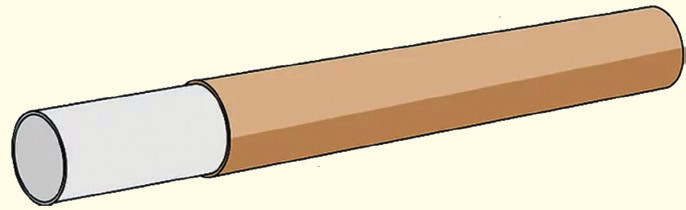

- 5. Fix the eyepiece lens securely at one end of the smaller tube using tape or glue.
- 6. Insert the smaller tube with the eyepiece into the larger tube with the objective lens as in Figure 6.9.

- 7. Adjust the length between the lenses to about the sum of their focal lengths () to focus the image.
- 8. Use your telescope to observe distant objects like the moon or buildings, and record your observations.
Questions
1. What did you observe when looking through your telescope?
Was the image upside down?
2. How did adjusting the distance between the lenses affect the focus and clarity of the image?
3. What challenges did you face during the construction of the telescope, and how did you solve them?
4. How could you improve your telescope to increase magnification or image clarity?
Exercise 6.3
1. An astronomical telescope in normal adjustment has a total length of 78 cm and produces an angular magnification of 15.
What is the focal length of the objective and eyepiece lens?
2. An astronomical telescope has its two lenses 78.0 cm apart.
If the objective lens of the telescope has a focal length of 75.5 cm, what is the magnification produced by the telescope?
3. A homemade telescope has an objective lens of focal length 140 cm and an eyepiece of focal length 4 cm.
What is the magnifying power of this telescope?
Determine the separation distance between the objective lens and the eyepiece.
4. How would the magnification of an astronomical telescope be affected if the focal length of the eyepiece and the objective lens are increased?
5. An observatory telescope has an objective lens of focal length 14 m.
Suppose an eyepiece of focal length 2 cm is used,
(a) What is the angular magnification of the telescope?
(b) If this telescope is used to view the moon, what is the diameter of the moon’s image formed by the objective lens?
The diameter of the moon is and the radius of the lunar orbit is .
Binoculars
When you visit a national park, you cannot get very close to dangerous animals, such as lions and leopards, for safety reasons. To closely watch such animals, one needs to use a device that can help the eye see distant objects closely. An optical device used in such a situation is called binoculars.